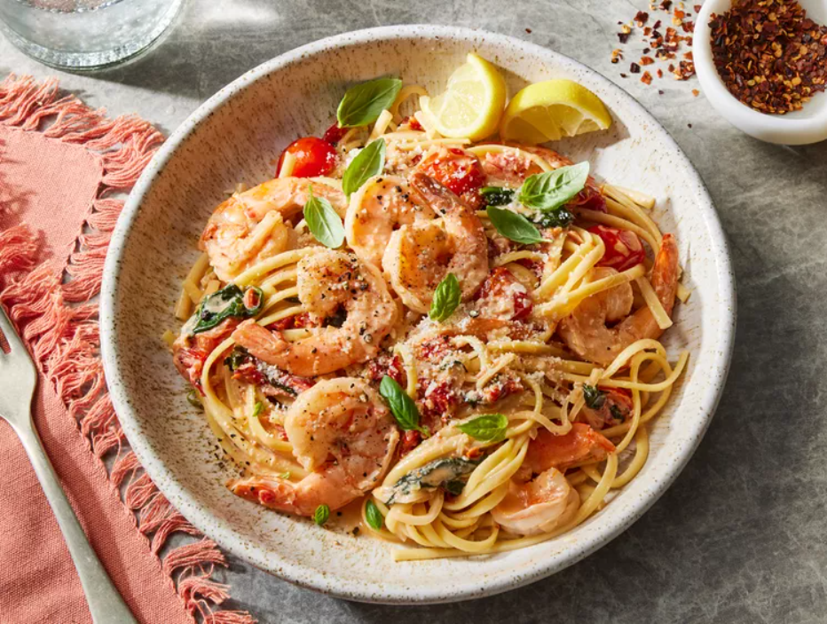

Creamy Garlic Butter Tuscan Shrimp coated in a light and creamy sauce filled with garlic, sun dried tomatoes and spinach! Packed with incredible flavours!
This authentic italian dish is not only nutritious but also a taste like heavenly.
Today we are going to learn how to make this delicious recipe
We are going to need the following ingredients in order to make Tuscan Butter Shrimp.
Now that we have all our ingredients prepared, let's follow to below steps to make some appetizing shrimps!
Gather all the ingredients and utensils.
Toss shrimp with salt and pepper in a large bowl until well combined. Heat a large high-sided skillet over medium heat. Add 1 tablespoon butter and 1 tablespoon sun-dried tomato oil; heat until shimmering, about 2 minutes. Add shrimp in an even layer, and cook until opaque and pink, 3 to 4 minutes, flipping shrimp halfway through cooking time. Transfer shrimp to a large plate.
Melt remaining 1 tablespoon butter with remaining 1 tablespoon sun-dried tomato oil in the same skillet; stir in cherry tomatoes, shallot, garlic, and sun-dried tomatoes. Cook, stirring occasionally, until tomatoes are soft and shallot is translucent, about 4 minutes.
Stir spinach, basil, wine, lemon zest, and crushed red pepper into mixture in skillet; cook over medium, scraping up any browned bits from bottom of skillet, until wine mixture is reduced by half, about 2 minutes. Stir in heavy cream. Reduce heat to low, and add Parmesan cheese; cook, stirring constantly, until mixture is slightly thickened and simmering, about 2 minutes. Remove from heat.
Stir in lemon juice; add cooked shrimp along with any juices from plate. Garnish with additional basil and Parmesan cheese.